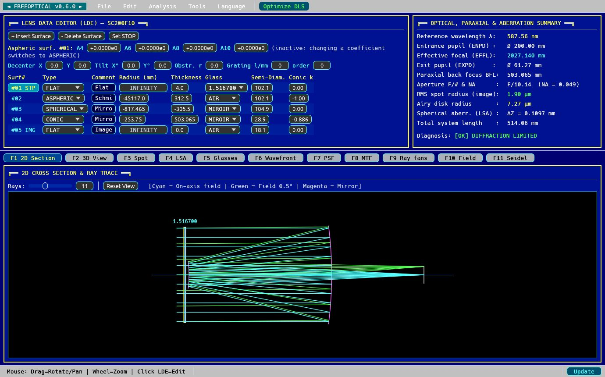
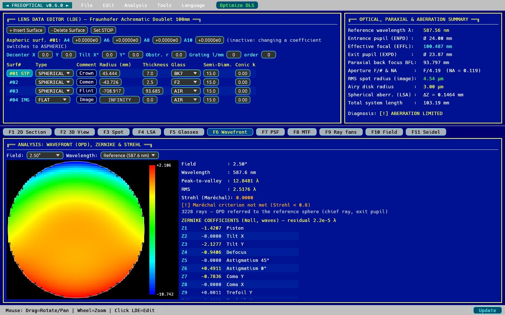
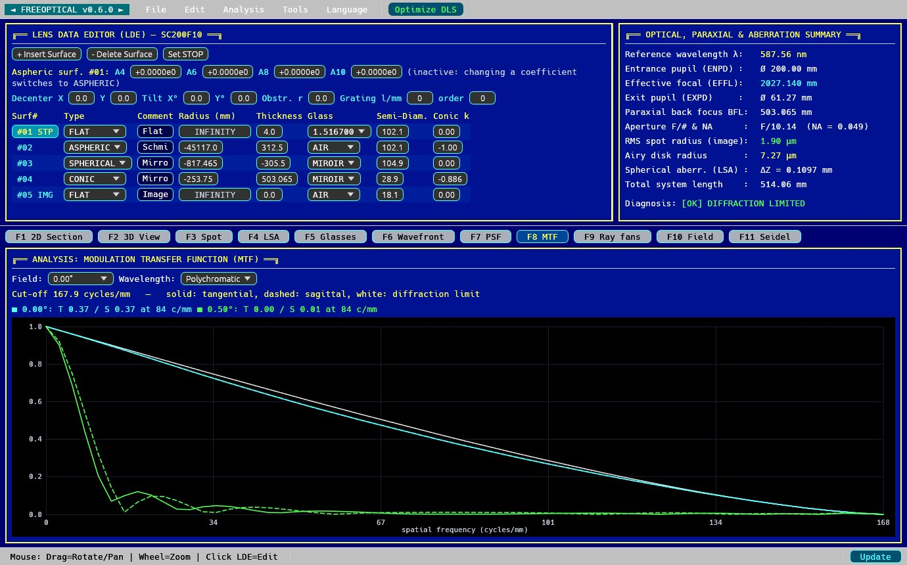
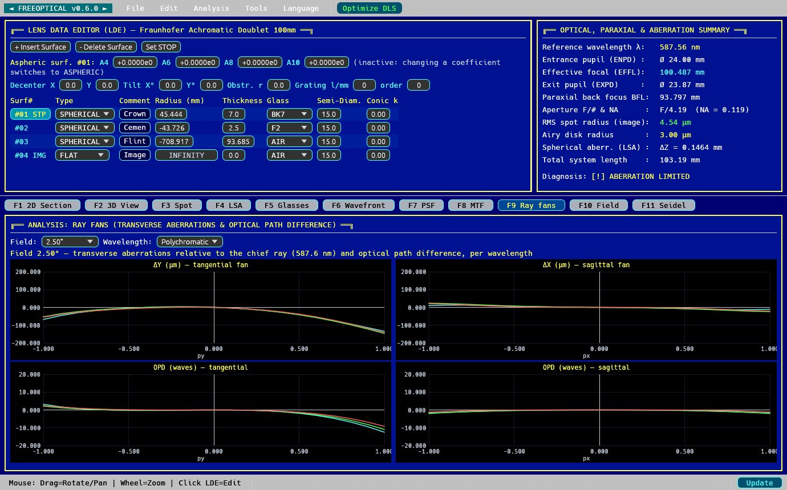

Features
Exact ray tracing
Sequential 3D ray trace: spheres, conics, even aspheres, mirrors, tilted and decentered surfaces (folded systems), central obstructions, diffraction gratings.
Wave analyses
Optical path difference (OPD), wavefront map, 37 Zernike polynomials, Strehl ratio, diffraction PSF and tangential and sagittal MTF.
Aberrations
Spot diagram, ray fans, longitudinal spherical aberration, field curvature, distortion and Seidel coefficients surface by surface.
Real glasses
Sellmeier formulas, built-in Schott glasses, fused silica and fluorite; import of Zemax .agf catalogues (Schott, Ohara, CDGM…).
Optimization
Damped least squares (DLS) over all fields and colours: radii, thicknesses, conics, aspherics, focal length and constraints.
Spectrographs and other instruments
Spectrographs (dispersion, slit image, resolving power R), near objects (microscopes, relays), afocal systems (eyepieces, binoculars), ideal lens.
Mirror testing
Bath interferometer: interferogram of a mirror at its centre of curvature, analysis of interferogram photos, measured conic, surface error and Strehl ratio.
Like professional software
Coordinate breaks for folded systems, solves and pickups (automatic focus, imposed F-number, aplanatic surface), encircled energy, chromatic analyses, beam footprints, import of Zemax .zmx files.
Open and scriptable
Graphical interface, terminal interface and MCP server to drive the calculations from an AI agent. Import of TDESIGN, LENSDES and RAYTRACE files (Rutten and van Venrooij).
Screenshots








Installation
Debian, Ubuntu and derivatives (amd64): download the .deb package of the latest release, then:
sudo apt install ./freeoptical_0.9.0_amd64.deb
Later versions install from the Update button of the program. From source: cargo build --release.
Who is it for?
Amateur astronomers who grind their mirrors or design their instruments, optics students and teachers, engineers looking for a free alternative to commercial optical design software such as Zemax OpticStudio, Code V or OSLO.
Languages
Interface in English, French and German (Language menu).